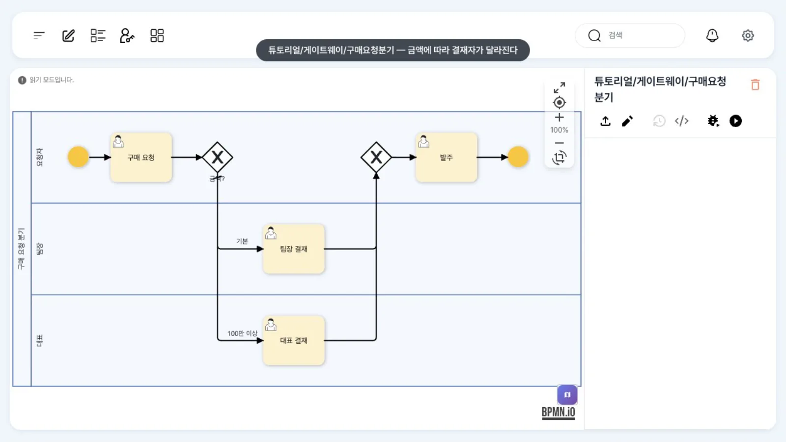
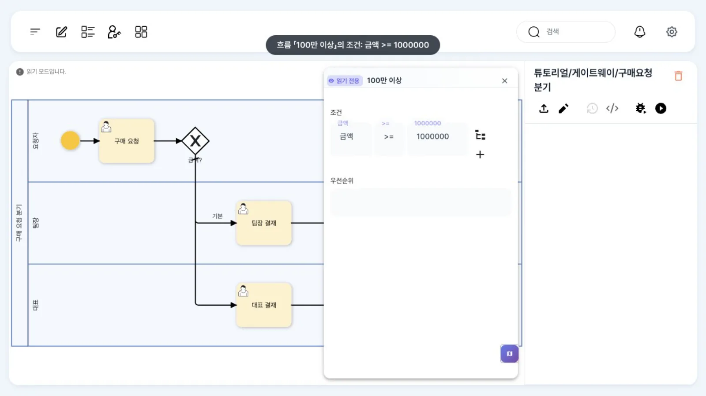
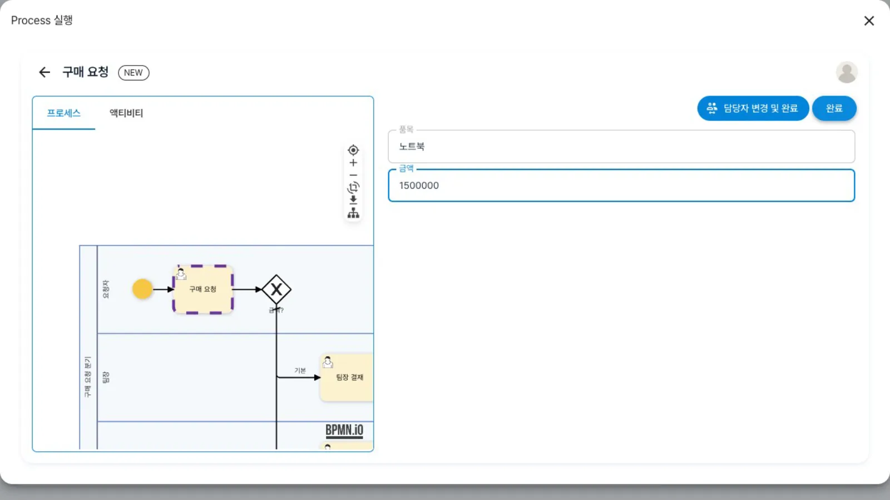
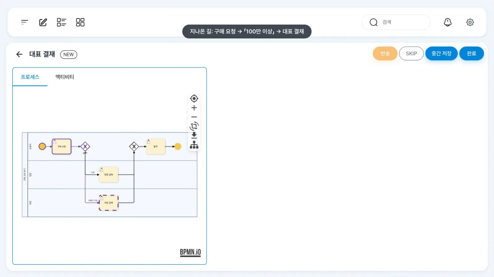
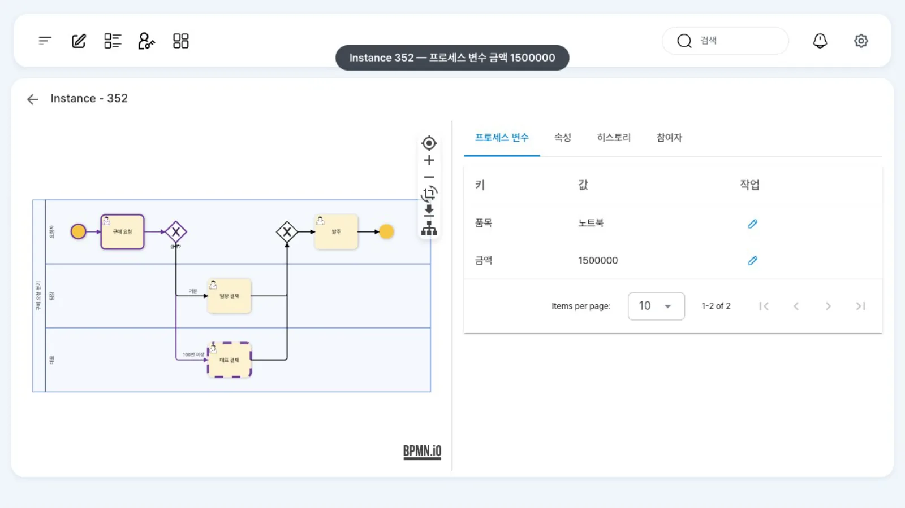

구매 금액이 100만 원 이상이면 김대표, 그보다 적으면 윤팀장이 결재하도록 배타 게이트웨이에 조건과 기본 흐름을 답니다. 같은 정의를 두 금액으로 실행해 경로가 달라지는지 확인합니다.
무엇을 · 왜#
배타 게이트웨이(exclusive gateway, XOR)는 나가는 흐름 가운데 하나만 고르는 분기점입니다. 그림에서는 안에 X가 있는 마름모입니다. 금액·품목·결재 결과처럼 프로세스 변수 값에 따라 다음 단계가 달라질 때 씁니다.
- 조건은 게이트웨이가 아니라 나가는 시퀀스 흐름에 답니다. 게이트웨이 자체의 속성 패널에는 레인만 보입니다.
- 엔진은 조건이 참인 흐름을 모두 찾은 뒤, 그중 「우선순위」(
priority) 숫자가 가장 작은 흐름 하나로 갑니다. 우선순위를 비워 두면 모두 0이므로 정의에 먼저 적힌 흐름이 선택됩니다(ExclusiveGateway.getPossibleNextActivities, 아래 「실행으로 확인한 동작」). - 기본 흐름(default flow)은 다른 흐름의 조건이 하나도 참이 아닐 때만 갑니다. 그림에서는 시작 부분에 빗금이 있는 선입니다. 기본 흐름이 없고 참인 조건도 없으면 토큰이 갈 곳이 없으니, 조건이 모든 경우를 다루지 않는다면 기본 흐름을 꼭 두세요.
uEngine6은 BPMN 표준의 conditionExpression(FEEL·JUEL 식)을 쓰지 않습니다. 조건은 흐름의 확장 속성 JSON에 org.uengine.kernel.Evaluate 객체(변수 이름·연산자·값)로 들어갑니다. 기본 흐름은 표준과 마찬가지로 게이트웨이의 default 속성이고, 엔진이 읽을 때 그 흐름의 조건을 「그 밖의 경우」(Otherwise)로 바꿉니다.
이 장의 예제는 가온가전의 구매 요청입니다.
| 단계 | 레인(담당) | 하는 일 |
|---|---|---|
| 구매 요청 | 요청자(실행한 사람 = 최구매) | 품목·금액 입력 → 변수 품목·금액 |
| 게이트웨이 「금액?」 | — | 금액 >= 1000000이면 「100만 이상」, 아니면 「기본」 |
| 대표 결재 | 대표(김대표 kim) |
100만 원 이상일 때 |
| 팀장 결재 | 팀장(윤팀장 yoon) |
그 밖의 경우 |
| 합류 → 발주 | 요청자 | 어느 쪽이든 결재가 끝나면 |
따라 하기#
- 정의 열기. 홍길동(
hong)으로 로그인해튜토리얼/게이트웨이/구매요청분기를 엽니다. 「읽기 모드입니다.」 상태에서 그림을 봅니다. 구매 요청 뒤 게이트웨이 「금액?」에서 「100만 이상」과 「기본」 두 흐름이 나갑니다. 레인은 요청자·팀장·대표 세 개입니다.
구매요청분기 정의 - 조건 보기. 「100만 이상」 흐름의 선을 더블클릭합니다. 오른쪽에 「읽기 전용」 흐름 패널이 열리고, 「조건」에 변수
금액, 연산자>=, 값1000000이 보입니다. 오른쪽의 +로 조건을 더 붙이면 AND/OR로 묶입니다. 그 아래가 「우선순위」입니다.
흐름 패널의 조건 - 기본 흐름 보기. 「기본」 흐름을 더블클릭하면 조건 칸이 비어 있습니다. 기본 흐름은 패널이 아니라 편집 모드에서 흐름의 렌치(교체) 메뉴 「Default Flow」로 지정합니다.
- XML로 확인. 오른쪽 위
</>(「XML 보기」)를 누릅니다. 게이트웨이에default="F4"가, 「100만 이상」 흐름의uengine:properties에Evaluate조건이 들어 있습니다. 패널을 쓰든 XML을 쓰든 설정은 이 두 곳에 저장됩니다. - 두 금액으로 실행. 최구매(
choi)로 로그인해 같은 정의를 열고 「실행」을 누릅니다. 「Process 실행」 대화상자에 첫 작업 「구매 요청」의 칸이 나옵니다. 품목노트북, 금액1500000을 넣고 「완료」를 누릅니다. 한 번 더 「실행」해 품목모니터, 금액300000으로 「완료」합니다.
실행 대화상자 - 서로 다른 사람에게 도착. 김대표(
kim)의 업무 목록에는 150만 원 건의 「대표 결재」만, 윤팀장(yoon)의 업무 목록에는 30만 원 건의 「팀장 결재」만 있습니다. 카드를 열면 작업 화면 왼쪽 그림에 지나온 길이 보라색으로, 현재 작업이 점선으로 표시됩니다.
김대표의 대표 결재 화면 - 관리자 화면에서 확인. 홍길동이 「관리자 페이지」에서 인스턴스를 열면(
/admin/<인스턴스 ID>) 「프로세스 변수」 탭에금액과품목이 있습니다. 같은 정의라도 변수 값에 따라 경로가 달라진 것을 그림과 변수로 함께 확인합니다.
관리자 상세
설정 레퍼런스#
요소와 _type#
| BPMN 요소 | XML | 확장 JSON(_type) |
패널 |
|---|---|---|---|
| 배타 게이트웨이 | <bpmn:exclusiveGateway default="흐름 id"> |
없음(게이트웨이 JSON은 비어 있어도 됨) | 레인 표시만 |
| 시퀀스 흐름 | <bpmn:sequenceFlow> + uengine:properties |
조건 org.uengine.kernel.Evaluate · 묶음 org.uengine.kernel.And / Or |
「조건」 빌더, 「우선순위」 |
| 기본 흐름 | 게이트웨이의 default 속성 |
엔진이 Otherwise로 바꿈 |
렌치 메뉴 「Default Flow」 |
흐름 패널 ↔ JSON#
| 패널 칸 | JSON 속성 | 예 |
|---|---|---|
| 「조건」의 변수 | condition.key |
"금액" (정의에 선언된 프로세스 변수 이름) |
| 「조건」의 연산자 | condition.condition |
">=" |
| 「조건」의 값 | condition.value |
1000000 (숫자는 따옴표 없이) |
| 「우선순위」 | priority |
작을수록 먼저. 비우면 0 |
이 장에서 배포한 정의(발췌)#
파일에는 JSON의 따옴표가 "로 들어 있습니다. 읽기 쉽게 풀어 적었습니다.
<bpmn:exclusiveGateway id="Gw" name="금액?" default="F4">
<bpmn:incoming>F2</bpmn:incoming>
<bpmn:outgoing>F3</bpmn:outgoing>
<bpmn:outgoing>F4</bpmn:outgoing>
</bpmn:exclusiveGateway>
<bpmn:sequenceFlow id="F3" name="100만 이상" sourceRef="Gw" targetRef="CeoApprove">
<bpmn:extensionElements><uengine:properties><uengine:json>
{"condition":{"_type":"org.uengine.kernel.Evaluate","key":"금액","condition":">=","value":1000000}}
</uengine:json></uengine:properties></bpmn:extensionElements>
</bpmn:sequenceFlow>
<bpmn:sequenceFlow id="F4" name="기본" sourceRef="Gw" targetRef="TeamApprove" />
조건에서 읽는 금액은 첫 작업 「구매 요청」의 입력 칸에서 옵니다. 작업의 아규먼트를 같은 이름의 프로세스 변수로 내보내는 매핑입니다(작업 입력값과 데이터 매핑).
{"_type": "org.uengine.kernel.HumanActivity",
"eventSynchronization": {"eventType": "",
"attributes": [{"name": "품목", "className": "String"}, {"name": "금액", "className": "Integer"}],
"mappingContext": {"mappingElements": [
{"argument": {"text": "품목"}, "direction": "out", "variable": {"name": "[Arguments].품목"}},
{"argument": {"text": "금액"}, "direction": "out", "variable": {"name": "[Arguments].금액"}}]}}}
레인은 사람을 직접 가리킵니다(첫 레인 「요청자」에는 담당자를 지정하지 않습니다 — 실행한 사람이 됩니다).
{"roleResolutionContext": {"_type": "org.uengine.kernel.DirectRoleResolutionContext",
"endpoint": "kim", "resourceName": "김대표"}}
조건식 문법 (이 튜토리얼에서 실제로 통과한 식)#
| 조건 JSON | 변수 값 | 결과 |
|---|---|---|
{"key":"금액","condition":">=","value":1000000} |
1500000 · 300000 · 1000000 · 문자열 "1500000" |
대표 · 팀장(기본 흐름) · 대표 · 대표 |
{"key":"금액","condition":"==","value":1000000} |
숫자 1000000 · 문자열 "1000000" |
참 · 거짓(타입이 달라서) |
{"key":"HW","condition":"==","value":"Y"} |
"Y" · "N" |
참 · 거짓(병렬·포괄 게이트웨이) |
{"key":"결재등급","condition":"==","value":"conditional"} |
규칙표 결과 | 결재선을 규칙표로 |
엔진(Evaluate)의 비교 규칙은 다음과 같습니다(코드와 위 표의 실행 결과로 확인).
- 변수 값이 문자열이고 비교 값이 숫자면, 문자열을 숫자로 바꿔 비교합니다(쉼표와 앞의
$는 지움). 화면에서 입력한"1500000"도>= 1000000으로 비교됩니다. ><>=<=는 비교 값의 타입(정수·실수)에 맞춰 숫자로 비교합니다.==!=는 값과 타입이 모두 같아야 참입니다. 숫자 변수에는==보다 범위 비교를 쓰세요.- 조건의 변수는 정의에 선언된 프로세스 변수여야 합니다. 없으면
Process variable '…' does not exist.로 실패합니다.
실행으로 확인한 동작#
이 장을 만들며 변형 정의를 API로 실행한 결과입니다(확인 뒤 변형 정의는 지웠습니다).
| 변형 | 입력 | 간 곳 |
|---|---|---|
「500만 이상 → 반려 안내」 흐름 추가, 우선순위 반려 1 · 100만 이상 2 |
7,000,000 · 1,500,000 · 300,000 | 반려 안내 · 대표 결재 · 팀장 결재 |
| 같은 두 흐름, 우선순위 비움 | 7,000,000 | 대표 결재(정의에 먼저 적힌 「100만 이상」) |
| 「100만 이상」의 조건을 지움 | 300,000 | 대표 결재(조건 없는 흐름은 늘 참) |
흔한 실수#
| 증상 | 원인 | 고치는 법 |
|---|---|---|
| 늘 기본 흐름으로 감 | 조건의 변수 이름이 작업 아규먼트 이름과 같고 프로세스 변수로 매핑되지 않음 | 작업의 데이터 매핑으로 변수에 넣습니다 |
| 게이트웨이에서 멈춤 | 기본 흐름 없이 조건이 모두 거짓 | 기본 흐름을 지정합니다 |
| 조건 없는 흐름이 늘 함께 선택됨 | 조건이 없는 흐름은 엔진이 참으로 봅니다(기본 흐름이 아니면) | 나머지 흐름은 기본 흐름으로 지정하거나 조건을 답니다 |
숫자 ==가 거짓 |
==는 타입까지 비교 |
>=·<=를 씁니다 |
확인 문제#
금액 1,000,000원이면 누가 결재하나요?
김대표입니다. 조건이 >=이므로 정확히 100만 원이어도 「100만 이상」 흐름이 참입니다.
「100만 이상」 흐름의 조건을 지우면 어떻게 되나요?
조건이 없는 흐름은 늘 참으로 평가되므로 모든 요청이 대표 결재로 갑니다. 기본 흐름은 다른 흐름이 하나도 참이 아닐 때만 쓰입니다.
500만 원 이상은 「반려 안내」로 보내는 흐름을 더하려면 무엇을 바꾸나요?
게이트웨이에서 「반려 안내」로 가는 흐름을 더해 조건 금액 >= 5000000을 달고, 그 흐름의 「우선순위」를 「100만 이상」보다 작은 숫자로 둡니다(예: 반려 1, 100만 이상 2). 500만 원 이상이면 두 조건이 모두 참이 되므로 우선순위로 하나를 고르게 해야 합니다. 우선순위를 비워 두면 정의에 먼저 적힌 「100만 이상」이 선택되어 대표 결재로 갑니다.